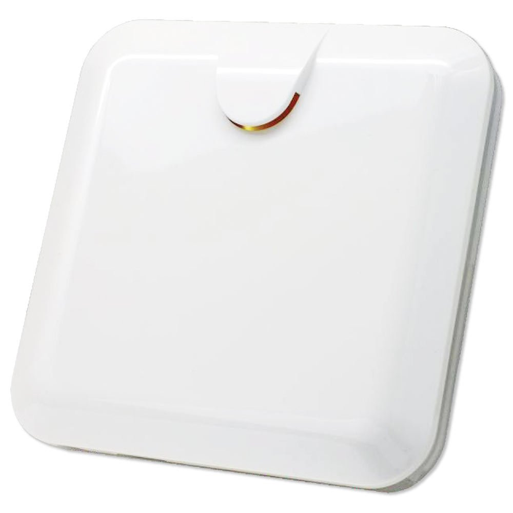
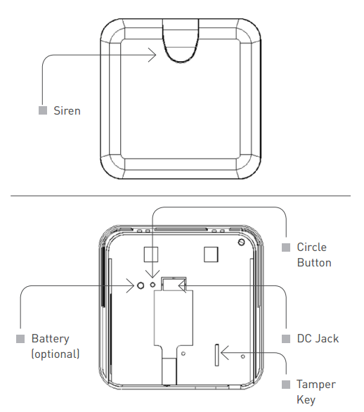

Zipato Z-Wave Indoor Multi-Sound Siren (PH-PSE02.US)¶

Brief information¶
- Indoor Z-Wave siren with 6 selectable alarm sounds
- Loud volume (110db) for all sounds
- Z-Wave Plus certified for wide compatibility
- Built-in tamper and over-discharge protection
- Can easily mount in a standard electrical box
How to add to VENUS app¶

- Newly add to VENUS network
- Press “Add button” (button ‘+’) in app
- Press the tamper key three times within 1.5 seconds
- Wait for VENUS scan & detect this device and inform in app
- Reset before adding
- Press “Add button” (button ‘+’) in app
- Press the tamper key three times within 1.5 seconds (to reset device)
- Press the tamper key three times within 1.5 seconds once more (to add)
- Wait for VENUS scan & detect this device and inform in app
How to add/remove associated device(s) to¶
This device supports 1 association group with max 8 nodes.
- Add z-wave notified-devices (which will be associated to this sensor) to VENUS
- Select Associate button and then select notified-device(s) to add
- Press the tamper key three times within 1.5 seconds
- If successful, pop-up notification displays in VENUS app
To remove associated device(s) from this sensor, below action is required:
- Select Associate button and then select notified-device(s) to remove
- Press the tamper key three times within 1.5 seconds
- If successful, pop-up notification displays in VENUS app
Configuration description¶
Enable alarm
Available 0: enable 1: disable Default 0 Alarm duration
Available 0: never auto stop alarm 1 ~ 127 ticks (tick = 30 seconds) Default 6
Factory reset¶
- Press tamper key four times within 1.5 seconds and do not release the tamper key in the 4th pressed, and the LED will light ON.
- After 3 seconds the LED will turn OFF, then within 2 seconds, release the tamper key. If successful, the LED will light ON one second. Otherwise, the LED flashes once.
- IDs are excluded and all settings will reset to factory default.